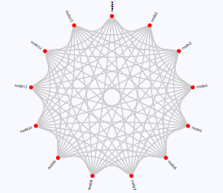
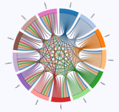
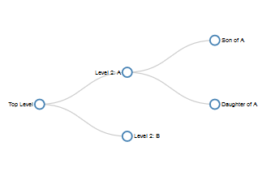
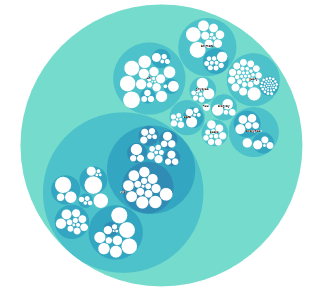
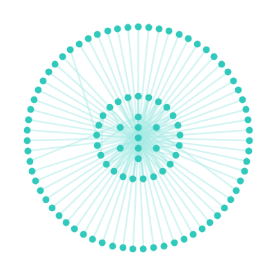
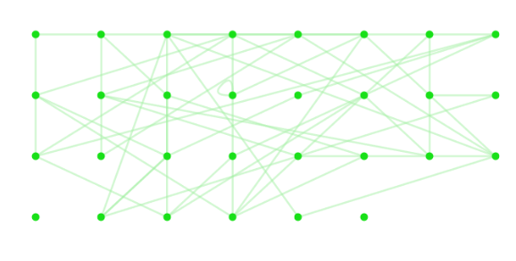
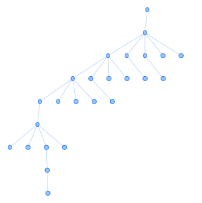

DaGoo
Home
Upload File
Products
Contact us
Graph Layout
Circular Layout

Chord Diagram

Tree Layout

Pack Layout

Radial layout

Grid Layout

Hierarchical Layout

Product3D
Product2D
Product Tower
{% for item in nodes %}
{{ item }}
{% endfor %}
{% for item in matrix %}
{{ item }}
{% endfor %}
×
Upload File